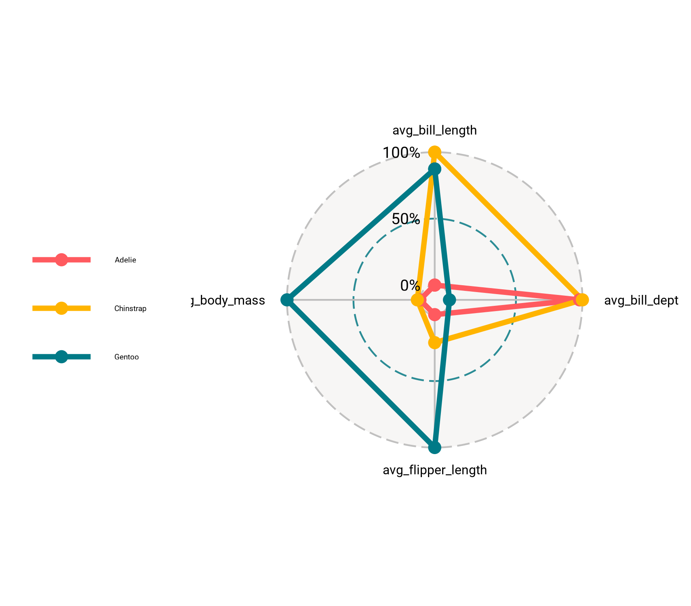
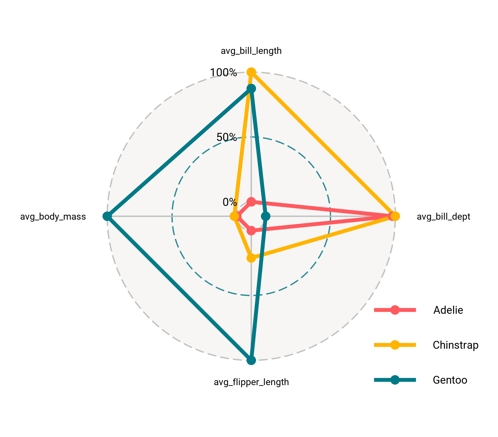
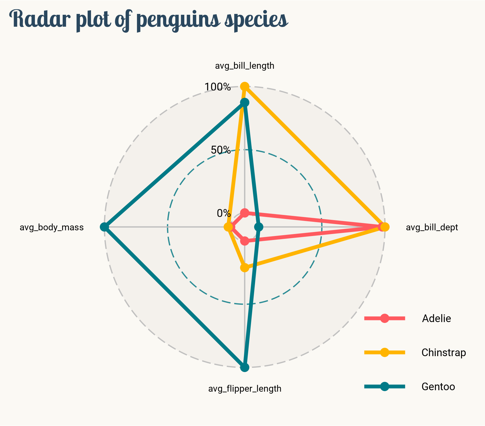

About
This page showcases the work of
Tuo Wang that introduces
packages to make
ggplot2
plots more beautiful. You can find the original code on Tuo’s blog
here
Thanks to him for accepting sharing his work here! Thanks also to
Tomás Capretto who split
the original code into this step-by-step guide! 🙏🙏
Load packages
Let’s start by loading the packages needed to build the figure.
ggradar is the
star of the day. This package does only one thing, but it does it
very well. Thanks to it, making ggplot2 based radar
charts is extremely easy.
Note: ggradar can be installed from
github with
remotes::install_github("ricardo-bion/ggradar").
library(ggradar)
library(palmerpenguins)
library(tidyverse)
library(scales)
library(showtext)
Use font_add_google() to download fonts. The second
argument is an (optional) alias that will be used throughout the
plot.
font_add_google("Lobster Two", "lobstertwo")
font_add_google("Roboto", "roboto")
# Showtext will be automatically invoked when needed
showtext_auto()
Another option would be to use the
ragg library for
the backend. With ragg, all the fonts installed in your
computer are available can be used to build charts without having to
use showtext.
Load and prepare the dataset
Today’s data were collected and made available by
Dr. Kristen Gorman
and the
Palmer Station, Antarctica LTER, a member of the
Long Term Ecological Research Network. This dataset was popularized by
Allison Horst in her R
package
palmerpenguins
with the goal to offer an alternative to the iris dataset for data
exploration and visualization.
data("penguins", package = "palmerpenguins")
head(penguins, 3)
After dropping observations with missing values, it’s necessary to
compute the mean value for the numerical variables that will be
displayed in the radar chart. Then, with the aid of the
rescale() function from the scales pacakge,
these summaries are rescaled to the [0, 1] interval.
penguins_radar <- penguins %>%
drop_na() %>%
group_by(species) %>%
summarise(
avg_bill_length = mean(bill_length_mm),
avg_bill_dept = mean(bill_depth_mm),
avg_flipper_length = mean(flipper_length_mm),
avg_body_mass = mean(body_mass_g)
) %>%
ungroup() %>%
mutate_at(vars(-species), rescale)
Basic radar chart
Creating a radar chart with ggradar is as easy as
calling ggradar(data). In this case, the pipe operator
%>% is used to pass the data frame to the function.
plt <- penguins_radar %>%
ggradar(
font.radar = "roboto",
grid.label.size = 13, # Affects the grid annotations (0%, 50%, etc.)
axis.label.size = 8.5, # Afftects the names of the variables
group.point.size = 3 # Simply the size of the point
)

Can we make it better than that? Of course! Let’s keep working on
it.
Custom legend
The chart above has nice default colors and axis guides, that’s
great for such a few lines of code!
The next step is to make it prettier. Let’s get started by fixing
the overlap in the legend and making some adjustments.
# 1. Set the position legend to bottom-right
# 2. Bottom-right justification
# 3. Customize text size and family
# 4. Remove background and border color for the keys
# 5. Remove legend background
plt <- plt +
theme(
legend.position = c(1, 0),
legend.justification = c(1, 0),
legend.text = element_text(size = 28, family = "roboto"),
legend.key = element_rect(fill = NA, color = NA),
legend.background = element_blank()
)

Very nice! It’s amazing what can be done with just two small chunks
of code.
Final chart
The chart above is pretty close from being publication ready. What’s
needed now is a good title and final touches to the layout:
# * The panel is the drawing region, contained within the plot region.
# panel.background refers to the plotting area
# plot.background refers to the entire plot
plt <- plt +
labs(title = "Radar plot of penguins species") +
theme(
plot.background = element_rect(fill = "#fbf9f4", color = "#fbf9f4"),
panel.background = element_rect(fill = "#fbf9f4", color = "#fbf9f4"),
plot.title.position = "plot", # slightly different from default
plot.title = element_text(
family = "lobstertwo",
size = 62,
face = "bold",
color = "#2a475e"
)
)
And finally, save the result.
ggsave(
filename = here::here("img", "fromTheWeb", "web-radar-chart-with-R.png"),
plot = plt,
width = 5.7,
height = 5,
device = "png"
)
